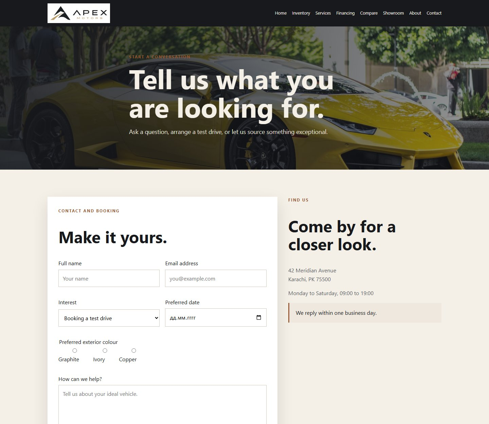

Web technologies · Assignment 1
A considered foundation
for the open road.
A nine-page, framework-free dealership website built with semantic HTML, one shared external stylesheet, and a consistent visual identity.

Team: Apex Motors
Group: SE-2507
Members: Arsen · Kuttibay
Members: Farabi · Muhammad
Course: Web Technologies
Project: Framework-free HTML and CSS
Objective. Build a clear, navigable dealership website that demonstrates document structure and core HTML/CSS elements across multiple connected pages, with shared styling and real local imagery.
01 · Content and structure
One connected dealership experience
The site is organized as nine standalone HTML pages with consistent page landmarks and a shared visual shell. Each page uses a document title, a header containing the brand and primary navigation, a main content area with headings and sections, and a footer with the team and dealership details.
Semantic HTML in practice
- Start each document with the HTML doctype, language, character set, and responsive viewport metadata.
- Use
<header>, labeled <nav>, <main>, related <section> elements, and <footer> to expose clear page regions.
- Represent each inventory entry as an
<article> with a vehicle image, title, details, and next action.
- Use ordered headings, descriptive image alternatives, visible form labels, and table header cells to make content understandable.
Shared navigation and identity
The same Apex Motors logo and eight-link navigation connect Home, Inventory, Services, Financing, Compare, Showroom, About, and Contact. The footer repeats the brand, address, and all four team names so visitors can orient themselves on every page.
All nine pages link to the same external file: css/style.css. The Assignment 1 site uses no CSS framework.
Local image assets
The logo, vehicle photography, service imagery, showroom image, and member portraits live in the project's images/ folder and are reused by their relevant pages.
Page responsibility map
| Member | Page lead responsibilities | Documented role alignment |
|---|
| Farabi | index.html, about.html | Home experience, shared navigation, team presentation |
| Arsen | inventory.html, vehicle-detail.html | Vehicle collection, featured-card and detail content |
| Kuttibay | financing.html, contact.html | Customer actions, inquiry form and finance information |
| Muhammad | services.html, compare.html, showroom.html | Service and comparison content, grid/gallery presentation |
Page leads are aligned with the team's documented Apex Motors/A3 responsibility map; the shared site structure and styling are team work.
02 · External CSS and core elements
Reusable styling, clear page patterns
The shared stylesheet defines brand colors as custom properties, a common type scale, constrained content containers, reusable navigation and footer styles, and the presentation of cards, tables, forms, and imagery. Updating a shared rule keeps the nine pages visually consistent.
Selectors used to target the right elements
element: body, tableclass: .main-nav, .cardID: #main-contentdescendant: .main-nav apseudo-class: :hover, :focus-visibleattribute: [type]
Type selectors provide defaults, class selectors apply reusable components, IDs identify a unique page region, and state selectors give links, buttons, and controls interactive feedback.
Structured comparison table
compare.html uses a real table with a header row and named specification rows to compare three vehicles. The shared stylesheet distinguishes column headings, adds alternating row backgrounds, and keeps the table readable in its wrapper.
Labeled inquiry form
contact.html connects labels to name, email, interest, date, radio, and message controls. Required fields use browser validity checks and feedback is announced in a status region. This classroom form does not transmit or store personal information.
Real page evidence · Compare

Captured from the framework-free root site; the table displays specification headings and three vehicle columns.
Images, links, and supporting pages
Inventory cards and the detail page pair local car images with descriptive alternative text; services use service photographs; the showroom groups vehicle photography; and About presents the four supplied member portraits. Page links connect these sections to the inquiry and detail journeys.
03 · Rubric walkthrough
Assignment 1, step by step
- Plan a multi-page subject. Choose Apex Motors and outline nine useful journeys: browse, compare, learn about services, and contact the dealership.
- Create each page's document skeleton. Add metadata, a meaningful title, semantic site landmarks, ordered headings, and page-specific content.
- Connect the pages. Reuse the logo and primary navigation across all nine pages; make the footer and related page actions consistent.
- Build a shared external stylesheet. Define common brand tokens, containers, type, navigation, buttons, cards, table, form fields, and footer once in
css/style.css.
- Apply varied HTML elements. Use real links, figures/images, articles, a comparison table, lists, labeled form controls, fieldset/legend, and buttons in the pages where they fit.
- Choose suitable CSS selectors. Combine element, class, ID, descendant, pseudo-class, and attribute selectors so shared rules and states have clear targets.
- Review the connected experience. Check that links resolve, images have descriptive alternatives, forms expose labels, and the repeated header and footer remain present.

Evidence from the existing Contact page: site navigation, semantic page content, labeled form controls, and repeated footer structure.
Result. The assignment deliverable is a complete, self-contained root website with nine HTML pages, one shared CSS file, and locally stored images. The two LMS ZIPs package the cumulative root project separately for A1 and A2.
04 · Reflection and publication
Final reflection
Starting with semantic HTML gave the project a stable structure before visual details were added. Building nine pages around the same external stylesheet helped the team see how shared navigation, containers, card patterns, form fields, and a consistent color system reduce repetition without making every page feel identical. Real dealership content also gave each HTML element a clear purpose: a comparison table for specifications, a form for inquiries, and meaningful images for vehicles and people.
One lesson was that a page's quality depends on both content and the way it is organized. Descriptive labels, image alternatives, proper table headings, and connected navigation all make the site easier to understand. The framework-free foundation also made the CSS rules visible and gave the team a clean starting point for later layout work.
Published root website
https://vertex-blip.github.io/Car-dealership-website/
The live site is the cumulative framework-free Assignment 1/2 project. Assignment 3 remains a separate Bootstrap project in its own folder.
Team
Apex Motors · Group SE-2507 · Arsen · Kuttibay · Farabi · Muhammad